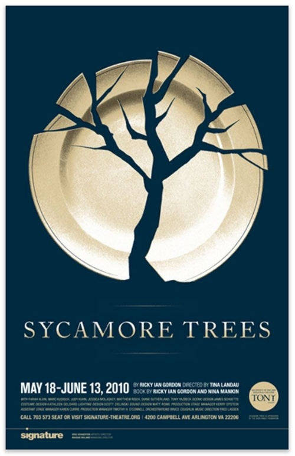
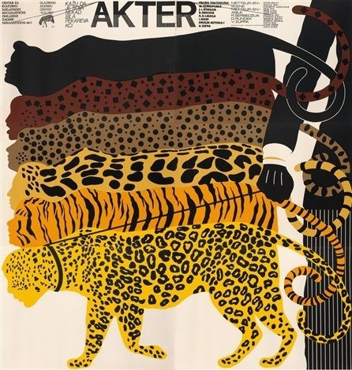

Zovem se Dejana Ročkar. Dolazim iz Ludbrega. Prva sam godina na Grafičkom fakultetu u Zagrebu, smjer grafički dizajn. Bavim se veslanjem i u slobodno vrijeme čitatam i slikam. Najviše od svega volim provoditi dane u prirodi, preporučam šetnje uz Muru i Dravu. Pohađanjem ovoga kolegija zainteresirala sam se za rad u Adobe programima. Najviše se vidim u kreaciji dizajna za plakate.
Radovi kojima sam inspirirana i multimedija iz zadatka 11/10:
 